A 360° digital & content growth proposal for two sister brands under Delous Company Limited — Sein Traditional Sauce and Shwe Traditional Sauce. Two kitchens, one production standard, and a digital presence the factory floor has already earned.
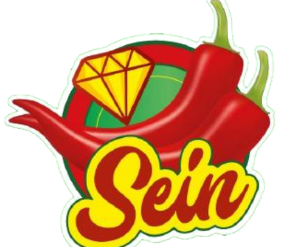
×01 · Research & Context
Delous Company Limited is a Yangon-based condiments manufacturer, part of the wider Delous Group. It owns Sein Traditional Sauce and Shwe Traditional Sauce — two genuinely different brands built for two different buyers, not two versions of the same page.
Brand Architecture
Traditional Sauce — Premium · retail · Est. 2002
Home cooks & culinary pros
Traditional Sauce — Commercial · B2B · Cost-effective
Restaurants, vendors & catering kitchens
“The most trusted, premium brand for cooking essentials”
Differentiator: naturally fermented chili in every sauce.
“Reliable, affordable, safe ingredients for food businesses”
Differentiator: commercial-grade, ready-to-use formats built for high-volume kitchens.
Verified directly against Delous's own website and both brand pages — not estimated.
| 3 separate pages across the group — Sein, Shwe, and Delous Group corporate. No shared strategy visible between them. | |
| TikTok | Shwe has a quiet, unmanaged start — @shwetraditionalsau, 48 followers, 2 posts, though the pinned one already pulled 23.6K views. Sein has none. The group's only other TikTok, @delous.hr, is HR content. |
| YouTube & Press | No video presence found. No press or PR coverage found for either brand. |
| Page Polish | Sein has a clean vanity handle. Shwe's Facebook is still on a raw numeric profile.php URL — a small but telling gap. |
Myanmar's biggest platform is no longer Facebook.
Source: DataReportal, Digital 2026 Myanmar
What's working on Myanmar TikTok right now
Raw factory & process content consistently outperforms slick ads.
Fits Myanmar's communal, share-driven TikTok culture.
Above-average performance, with a longer shelf life than trends.
2026's shift is toward grounded, unfiltered storytelling.
“Golden Dragon” brand · Yangon · est. 2003
The closest direct competitor: chili garlic sauce, soy sauce, oyster sauce, fish sauce and vinegar, in similar retail and bulk sizes. No TikTok presence found for this brand either — the whole category is under-served on the platform that now matters most.
A naming coincidence worth knowing: Quality Food House sells its own “Sein Gae” and “Shwe Gae” fish sauces. “Sein” (diamond) and “Shwe” (gold) are common, traditional Myanmar naming words — not unique to this client.
02 · Strategy
The Big Idea
Every dish in Myanmar starts in one of two kitchens — a home kitchen, or a working kitchen. Sein owns the first. Shwe owns the second. Both are proof of the same underlying story: a naturally fermented, FDA-approved, 24-year-old production standard that just hasn't been told yet.
The Home Kitchen
Build a TikTok presence from zero and become the reference point for naturally fermented, everyday Myanmar chili sauce.
Home cooks and culinary professionals across Myanmar, ages 20–45, who already trust Sein on-shelf but have never seen the brand online.
Lead with the 24-year heritage story and the naturally-fermented process, then hand the mic to real dishes in real homes.
Warm, unhurried, proud — premium without being distant.
The Working Kitchen
Launch Shwe on TikTok as the trusted, cost-efficient choice for Myanmar's food businesses — restaurants, street vendors, caterers.
Small business owners running food carts, tea shops, restaurants and catering kitchens, who buy on cost, consistency and hygiene.
Prove the standard through real production and real kitchens, not claims — factory footage, vendor stories, and honest cost math.
Unfiltered, practical, working-kitchen energy — trade-insider, not corporate.
03 · Content Pillars
The naturally-fermented process and the 24-year story behind every bottle.
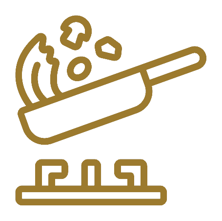
Everyday Myanmar dishes built around Chin Kae, Cho Kae, and the Premium range.
Close, sensory, ASMR-style shots — the pour, the sizzle, the drizzle.
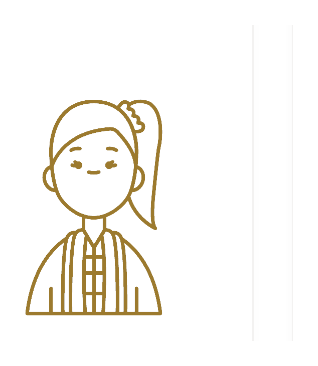
A UGC challenge inviting home cooks to show their own dish with Sein.
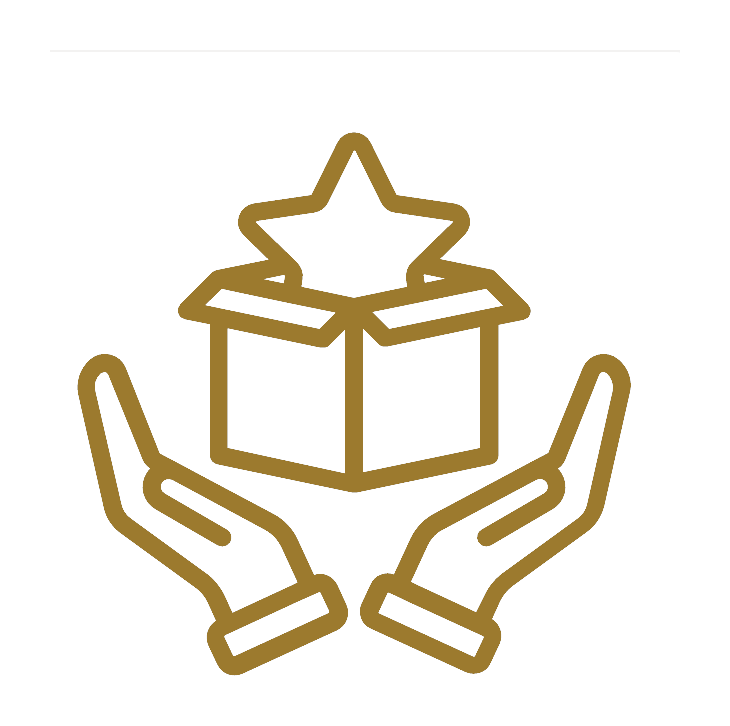
The FDA-approved facility and the consistency behind every batch.
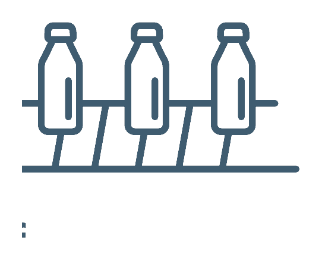
Real production and packaging footage — the hygiene claim, shown, not stated.
Real stalls, tea shops and restaurants using Shwe mid-service.
Cost-per-plate and prep-time-saved — the real reason a vendor switches.
Quick dishes shot from a vendor's-eye view, built for high-volume kitchens.
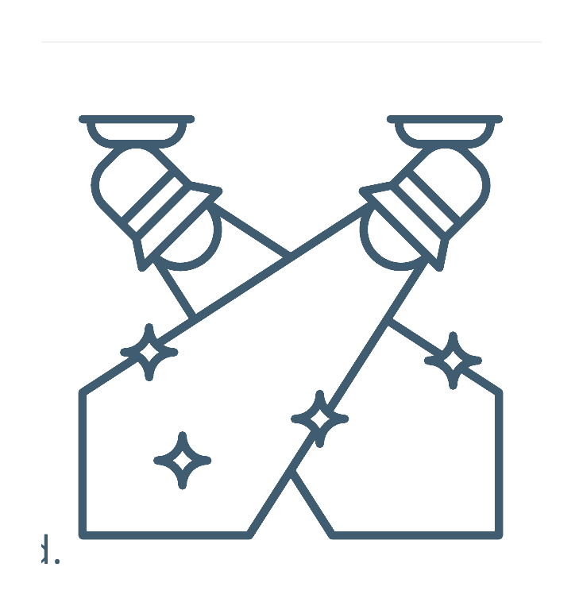
A recurring cast of real small business owners as the face of the brand.
04 · Web Series
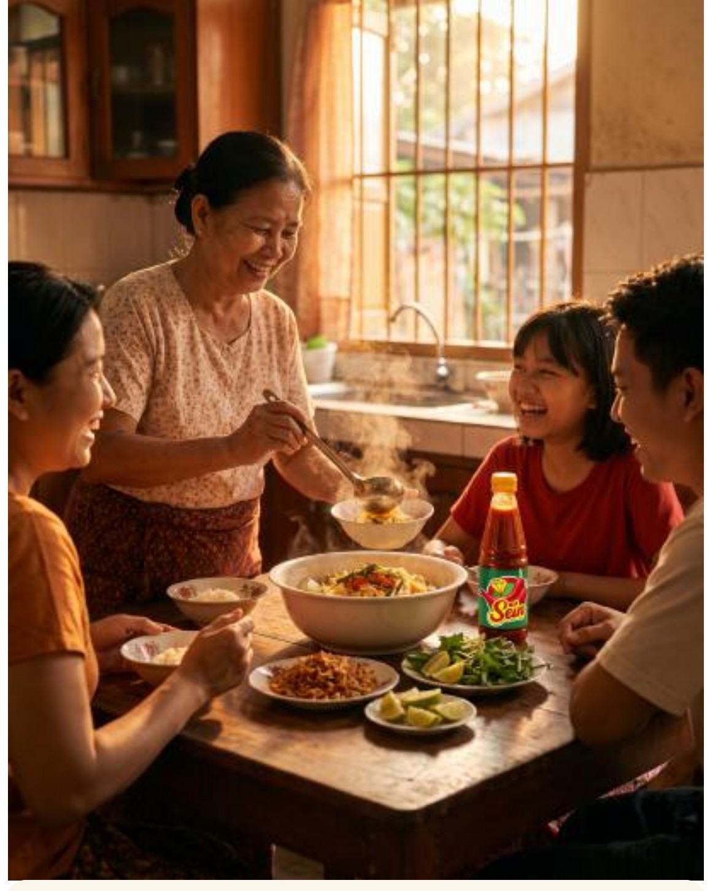
A weekly visit to a real Myanmar household, told through the one dish on their table tonight.
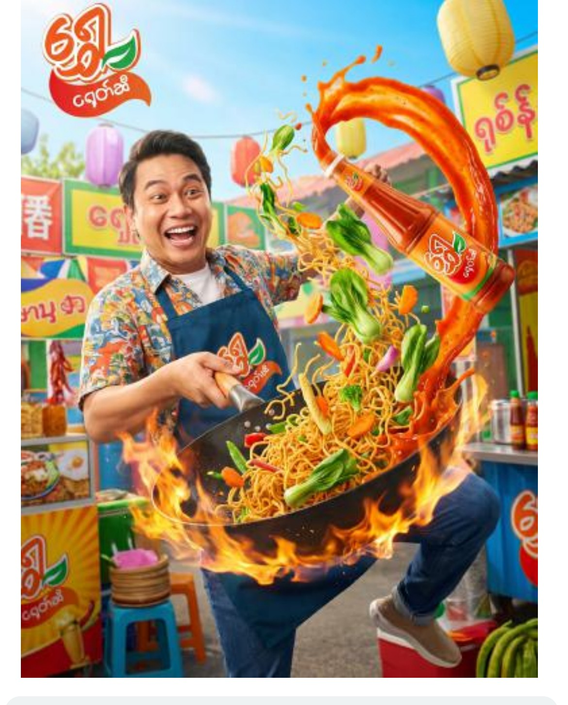
A docu-style look at one working day inside a real Myanmar food business — Shwe in actual use, not staged.
05 · Content Calendar
No Myanmar public holiday falls in September 2026 — verified against the official calendar. Full editorial runway, no holiday clutter. 10 posting days per brand shown, ~2–3× per week.
Launch: 24 years on Myanmar's table
Inside the naturally-fermented chili process
Recipe: nan gyi thoke, Cho Kae
How Sein began, back in 2002
Recipe: fried rice, Chin Kae drizzle
ASMR: chili-oil close-up
Challenge launch: "Show us your plate"
Recipe: grilled pork skewer dip
Challenge highlight: best entries
Winner reveal + a look at October
Launch: built for Myanmar's working kitchens
A mohinga stall's morning prep
Cost-per-plate: bottled vs. homemade
On the packaging line
Vendor spotlight: a tea shop owner
Prep-time saved, per batch
Street-cart evening rush
Vendor spotlight: a catering kitchen
Shwe Ni & Shwe Nyo, side by side
Vendor cast reel + a look at October
06 · Content Samples
A first look at tone and motion — the three finished animated hero spots, one per concept, playable below.
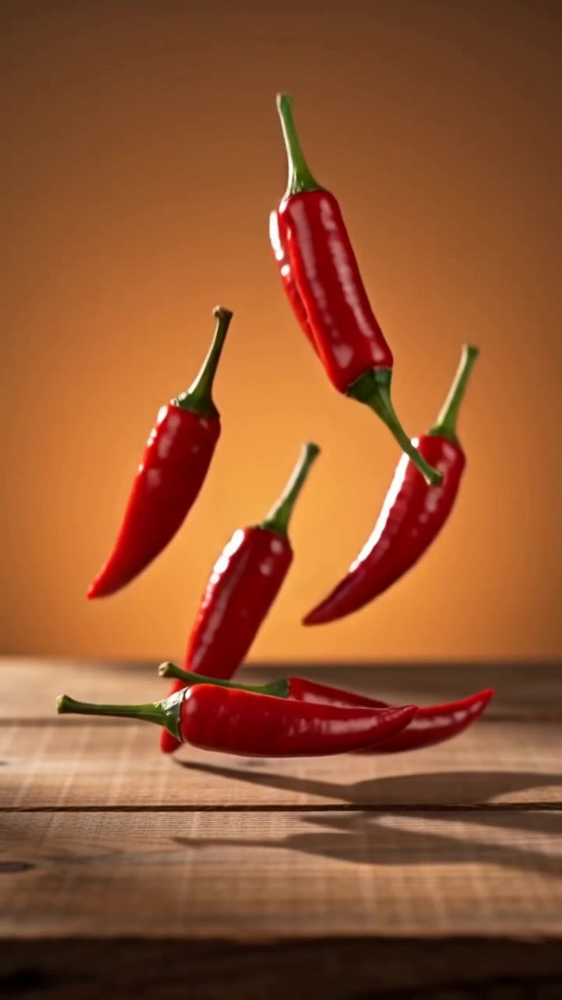
Purpose: an evergreen hero asset for the Sein profile pin and paid seeding — reusable across all five Sein content pillars.
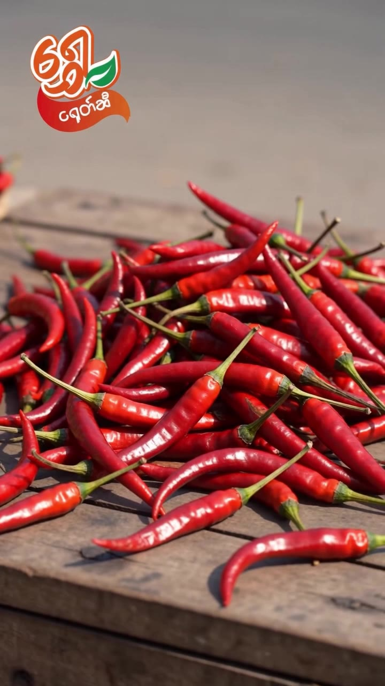
Purpose: a fast, numbers-led hero asset proving cost and time savings — built for Shwe's vendor-facing pillars and paid seeding to food-business audiences.
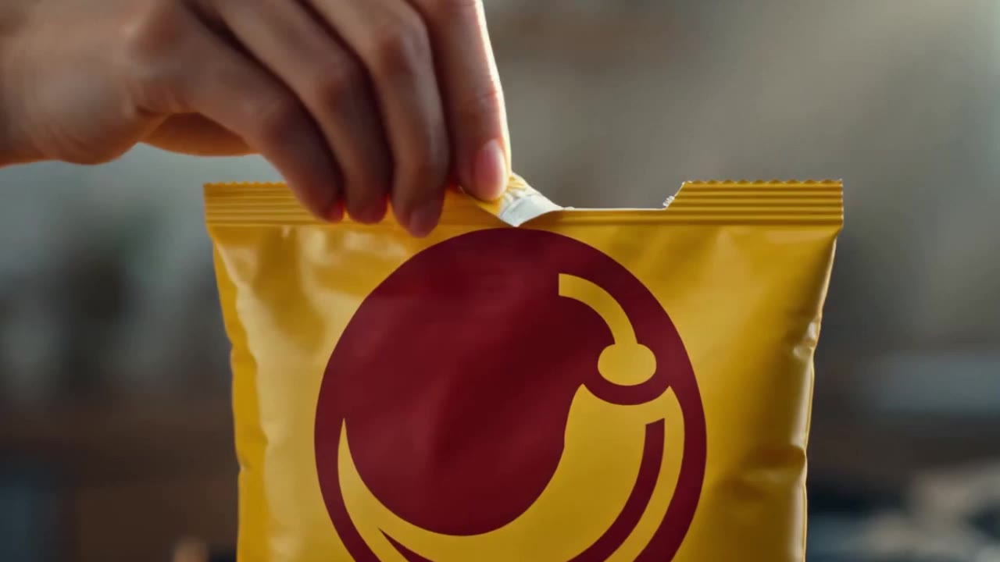
Purpose: a warm, everyday-life hero asset showing Shwe at home in a working kitchen — a second flavor of hero content for early paid seeding.
Each player is wired to its own file in assets/videos/ — swap in a revised cut at any point by replacing fermentation-story.mp4, vendors-math.mp4, or house-of-surprise.mp4 and the page picks it up automatically, no code changes needed.
07 · KOLs
Casting matches the two-kitchen split — home-cooking voices for Sein, working-kitchen voices for Shwe. Pulled from the full 90+ name talent database, ranked by reach — not a hypothetical tier model.
| Creator | Reach | Indicative Rate | Suggested Fit |
|---|---|---|---|
| May Zon | 2M | 700K/day, or 550–650K on a weekly/monthly retainer | Both — launch-week anchor, retainer option for ongoing content |
| Auntie Baby | 815.5K | 750K/day | Sein — the persona itself reads as warm, home-cook heritage |
| Shwe Hsu Paing | 385.1K | rate to confirm | Sein — strong general reach for launch amplification |
| Khine Su | 328K | 700K/day | Shwe — steady reach at a reasonable day rate |
| Yunnie | 210K | 800K/day | Sein — broad, general-audience appeal |
| Kari | 168.5K | 150K/video + product cost | Shwe — strong value for frequent, recurring content |
| Thiri Wathan | 86K | 180K/day (1 lakh/video) | Shwe — most affordable, fits a weekly cadence |
| Min | 80.5K | 300K/day | Shwe — budget-friendly, working-kitchen tone |
Reach and rates are as logged in Awaken's roster and may shift with confirmation. The sheet doesn't tag content niche, so a quick portfolio check before booking is worth the ten minutes.
08 · Why Awaken
A repeatable, proven formula for launching Myanmar FMCG brands on TikTok from zero. Every result below was organic — no paid media. Sein and Shwe start from the same zero.
Nearly 1M views and engagements in 3 months, tripling organic growth from a standing start — zero paid promotion.
Over 1M organic views and engagements in 3 months, from a brand-new account — zero paid promotion.
A launch trajectory that outpaced most emerging TikTok profiles in its category, from day one.
Both profiles live, hero animation pinned, first 17-post month for each brand, KOL seeding begins.
Web series episode 1–4 for each brand, Myanmar Flavor Challenge live for Sein, first vendor spotlights live for Shwe.
Best-performing pillar doubled down on, mid-tier KOL amplification, October content mapped against Thadingyut.
Kept deliberately modest and consistent with realistic growth ceilings for a new Myanmar FMCG account — not the inflated numbers a first pitch is often tempted to promise. Success in the first 90 days is measured on views, engagement and shareability, not follower count alone.
Two kitchens. One standard. Let's give Sein and Shwe the digital presence the factory floor already earned.
nyinyisoewin@awakenentertainment.org